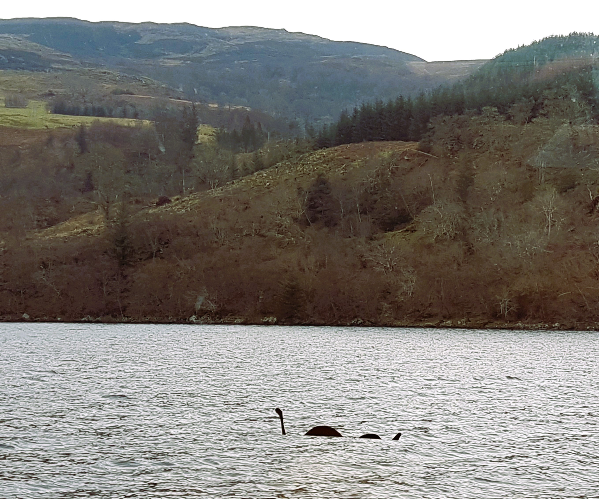
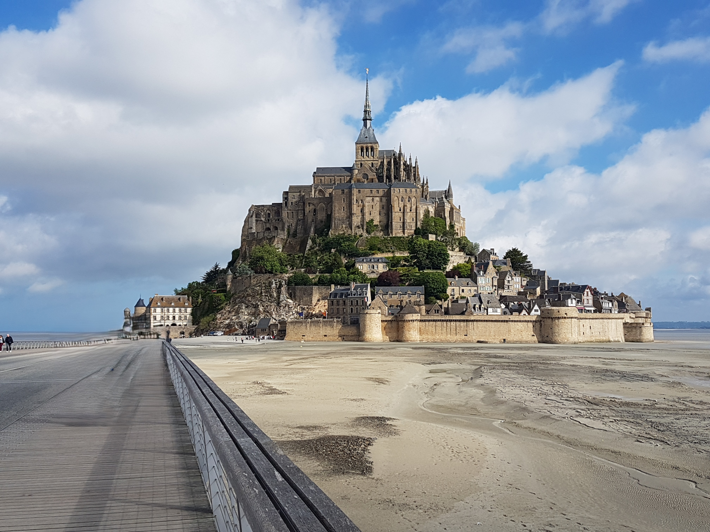

Exploration Nation: European Wanderlust
A Journey of passion-driven discovery across Europe, told from our unique perspective
While serving on Active Duty in the Army and stationed in Germany, my wife and I were incredibly fortunate to have the opportunity to travel. Over the four years we spent there, we were able to visit the following countries:
Germany
- Munich
- Nuremberg
- Garmish
- Berlin
Italy
- Rome
- Pompeii
- Venice
- Milan
Iceland
Land of Fire & Ice
- Reykjavík
- TBD
Poland
- Krakow
- Warsaw
- boleslawiec
Scotland
- Edinburgh
- Glasgow
- Loch Ness 
Romania
- Transylvania
- Bucharest
Austria
- Vienna
- Salzburg
- Bad Goisern
France
- Paris
- Strasbourg
- Le Mont-Saint-Michel 
Normandy Tour
- Beaches
- Cemetery
- Caen
Game of Thrones Tours
- Northern Ireland, UK
- Dubrovnik, Croatia
- Kirkjufell, Iceland